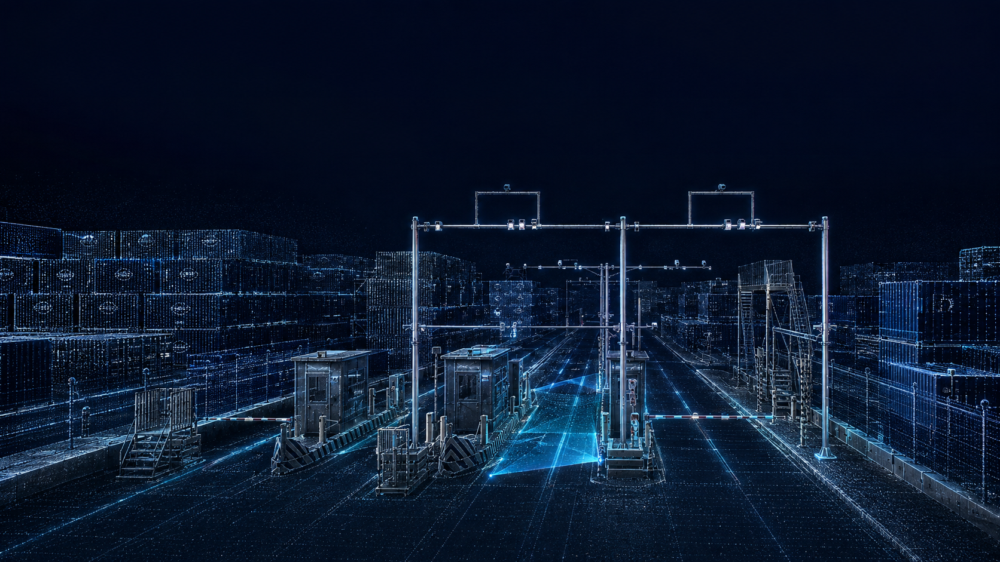

<!doctype html>
<html lang="zh-CN">
<meta charset="utf-8">
<meta name="viewport" content="width=device-width,initial-scale=1">
<title>智能闸口 · 动态背景预览</title>
<style>
*{box-sizing:border-box}body{margin:0;background:#020917;color:#c6e8fa;font:13px system-ui}main{height:100svh;display:grid;place-items:center;overflow:hidden}.scene{position:relative;width:min(100vw,177.68svh);aspect-ratio:1672/941}.scene img,canvas{position:absolute;width:100%;height:100%;inset:0}.scene img{object-fit:contain}canvas{pointer-events:none}button{position:fixed;bottom:24px;right:24px;color:#c6e8fa;background:#07172bd9;border:1px solid #284459;border-radius:30px;padding:10px 18px;cursor:pointer}button:focus-visible{outline:2px solid #a3efff;outline-offset:4px}
</style>
<main><div class="scene"><canvas aria-hidden="true"></canvas></div></main>
<button type="button" aria-pressed="false">暂停动效</button>
<script>
const canvas=document.querySelector('canvas'),ctx=canvas.getContext('2d'),button=document.querySelector('button');
const reduce=matchMedia('(prefers-reduced-motion: reduce)');
let paused=reduce.matches,frame=0,last=0,time=0;
const W=1672,H=941;
canvas.width=W;canvas.height=H;
// All coordinates share the background's original aspect ratio, keeping effects on the gate.
const particles=Array.from({length:100},(_,i)=>({x:((i*719)%W),y:330+((i*193)%580),phase:i*1.93}));
function line(a,b,alpha,width=1){ctx.strokeStyle=`rgba(108,218,255,${alpha})`;ctx.lineWidth=width;ctx.beginPath();ctx.moveTo(...a);ctx.lineTo(...b);ctx.stroke()}
function draw(t){
 ctx.clearRect(0,0,W,H);ctx.globalCompositeOperation='screen';
 for(const p of particles){const glow=.08+.35*Math.pow((Math.sin(t*.7+p.phase)+1)/2,4);ctx.fillStyle=`rgba(156,231,255,${glow})`;ctx.fillRect(p.x,p.y,1.5,1.5)}
 // Short streams follow the perspective of the road toward the inspection gantry.
 for(let lane=0;lane<3;lane++)for(let i=0;i<5;i++){
  const k=(t*.11+i/5+lane*.13)%1,k2=Math.min(1,k+.07);
  const start=[530+lane*400,938],end=[920+lane*95,548];
  const point=k=>[start[0]+(end[0]-start[0])*k,start[1]+(end[1]-start[1])*k];
  line(point(k),point(k2),Math.sin(k*Math.PI)*.45,1.3);
 }
 // A narrow light curtain scans only within the central inspection lane.
 const s=(t*.12)%1,y=568+s*224,left=926-s*114,right=1002+s*2;
 const grad=ctx.createLinearGradient(0,y-38,0,y);grad.addColorStop(0,'rgba(36,181,245,0)');grad.addColorStop(1,'rgba(36,181,245,.10)');
 ctx.fillStyle=grad;ctx.beginPath();ctx.moveTo(left+18,y-38);ctx.lineTo(right,y-38);ctx.lineTo(right,y);ctx.lineTo(left,y);ctx.closePath();ctx.fill();line([left,y],[right,y],.42,1);
 for(const [x,y] of [[856,377],[987,376],[1171,375],[1292,376]]){const a=.12+.28*(.5+.5*Math.sin(t*1.5+x));const g=ctx.createRadialGradient(x,y,0,x,y,10);g.addColorStop(0,`rgba(177,240,255,${a})`);g.addColorStop(1,'rgba(91,203,255,0)');ctx.fillStyle=g;ctx.fillRect(x-10,y-10,20,20)}
}
function loop(now){if(!paused){time+=Math.min((now-last)/1000,.05);draw(time)}last=now;frame=requestAnimationFrame(loop)}
function sync(){button.textContent=paused?'播放动效':'暂停动效';button.setAttribute('aria-pressed',String(paused))}
button.onclick=()=>{paused=!paused;sync()};reduce.addEventListener('change',e=>{paused=e.matches;sync()});
document.addEventListener('visibilitychange',()=>{if(document.hidden)cancelAnimationFrame(frame);else{last=performance.now();frame=requestAnimationFrame(loop)}});
sync();draw(0);frame=requestAnimationFrame(loop);
</script>
</html>
